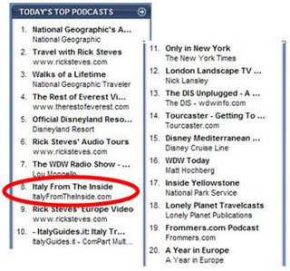
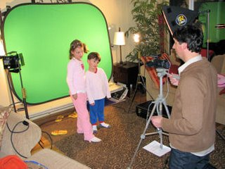

I'd like to share some positive facts regarding our New Media efforts to disseminate useful tips and information about Italy and its culture. Since we listed our podcast on iTunes just 3 months ago, we have been enjoying a steady growth in our audience. In fact, under the iTunes category Places & Travel, we rank #8, ahead of bigger brands like Frommers and Lonely Planet. More important, the 35 customer reviews received so far rate our shows a 4.5/5 stars. Here is an excerpt from their comments: "Very fun and informative. And never boring as many podcasts can easily lean that way." "The author and his wife have the unique ability to offer an insight from both American & Italian perspective. The podcasts offer many insights not available from the usual travel guides." "Excellent. This is exactly what I was looking for. I'll be living in Italy for 3 years and wanted something besides the standard travel book to go a little deeper into the culture and sights. This is it!" "Love it! I live in Italy and this podcast is right on the mark. Very entertaining and accurate." "Subscribe to this podcast if you plan on going to Italy!" "I highly recommend this podcast because it's for people who hate being tourists."
My daughter Silvia has started podcasting too. Her passion is to communicate Italian tips to the younger audience. Every audio episode takes on average 3 hours to plan, record and publish. Video episodes usually require twice as much time. If you own an iPod and/or have iTunes installed, it's easy to subscribe to our podcast. And if you want to help us keep our shows ad-free, we always welcome your support thru the purchase of our eBook. Grazie!!